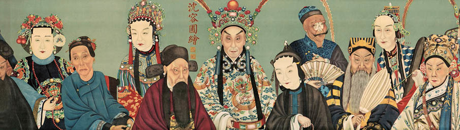

La culture découverte par les fouilles rue Yayoy fut appelée la "Civilisation de la rue Yayoy". Les fouilles ont révélé des pièces chinoises, laissant envisager que ses habitants entretenaient des relations commerciales avec le reste du continent.
On date à la fin du XIIème siècle l'existence d'un village de pêcheurs appelé Yedo ou Edo (port du golfe ou vous terre). Il est situé dans une plaine basse inondée par les marées, à l'embouchure du fleuve Sumida.
En 1457, un guerrier nommé Ota Dokuan construit une enceinte fortifiée autour de laquelle la population du marais se concentre.
De 1486 à 1524, la forteresse est occupée par un vassal de la famille Uyesugui, puis par Hozio Uzitsuma qui unifie la province et crée son propre état, dont la capitale est Odawara.
En 1542, les premiers occidentaux, des marchands et missionnaires espagnols et portugais, arrivent au Japon. Les Japonais découvrent alors la religion chrétienne et les armes à feu.
Hideyoshi, nommé "général" du shogun par l'empereur, décide de transférer la capitale du shogunat de Kyoto à Edo et envoit son fils Yyeyasu pour la conquérir.
La période Edo : la dynastie Tokugawa
En 1603, la forteresse d'Edo et son village sont conquis par Yyeyasu Tokugawa. Cet homme, petit aristocrate provincial, réussit à unifier le Japon et à écraser les seigneurs dissidents féodaux. Il crée la dynastie qui va gouverner la ville et le pays pendant un siècle et demi, période de grand éclat économique.
Yyeyasu force les seigneurs féodaux "daimyos" et les samouraïs à s'installer dans la nouvelle capitale avec leurs familles pendant au moins six mois par an, ce qui entraîne un grand développement urbain. Les marais sont nettoyés et asséchés. Des canaux sont construits pour favoriser le commerce.
Depuis lors, on dit que le Japon a deux capitales. La croissance de la nouvelle capitale est véritablement impressionnante et, en 1787, la ville compte plus de 1 300 000 habitants. En 1657, le célèbre incendie d'Edo a lieu, au cours duquel environ cent mille personnes perdent la vie.
L'ère Tokugawa est féodale et isolationniste : en 1624, tous les étrangers sont expulsés du Japon, en 1633 les Japonais n'ont plus le droit de quitter l'archipel (sous peine de mort) et, en 1637, les navires de gros tonnage sont interdits. Cependant, elle prépare le Japon à la révolution Meiji.
Avec l'appauvrissement des seigneurs, les classes ouvrières sont plongés dans de mauvaises conditions de vie. Les marchands qui fixent les prix comme ils le souhaitent, la situation devient insoutenable. Le 9 novembre 1867, le dernier shogun Tokugawa cède son pouvoir à l'empereur Meiji.
La revolution Meiji
En 1868, la transformation du pays démarre et Edo devient la capitale de l'empire Meiji unifié.
L'empereur s'installe dans la forteresse d'Edo, qui devient le Palais impérial du Japon. Le nom de la ville d'Edo est remplacé par Tokyo, qui signifie "Capitale de l'Orient". Tous les privilèges féodaux sont abolis et le Japon s'ouvre à la modernisation économique et administrative, avec l'aide des samouraïs.
Des tremblements de terre suivis de grands incendies marquent aussi cette période de l'histoire de Tokyo. En 1855, la ville fut détruite par un violent incendie. Elle est reconstruite dans la plaine et le delta de la Sumida.
En 1872, un autre incendie majeur détruit les quartiers de Ginza et Marunouchi, qui sont alors reconstruits selon les modèles architecturaux occidentaux.
Tokyo au XXème siècle
Au début du siècle, Tokyo devient le centre de mouvements nationalistes/panasiatiques et accueille les révolutionnaires des pays voisins (comme ceux luttant contre
la dynastie mandchoue en Chine). 
Cette tolérance entraîne des mouvements révolutionnaires en interne et, en 1918, la "révolte du riz" a lieu, qui met fin au pouvoir militaire expansionniste.
Pendant la Première Guerre mondiale, le Japon se bat au côté des alliés pour conserver les possessions allemandes en Chine et dans le Pacifique.
En 1923, le tremblement de terre du Grand Kanto détruit près de la moitié de la ville. La reconstruction de Tokyo est très coûteuse et dure sept ans, sur le modèle d'une ville occidentale.
Pendant la Seconde Guerre mondiale, l'aviation américaine réduit Tokyo à des ruines, causant plus de 80 000 morts. La capitulation du Japon est signée dans la baie de Tokyo, à bord du célèbre 'cuirassé Missouri.'  Après la guerre, le 2 septembre 1945, Tokyo est occupé et gouverné par les forces alliées jusqu'en avril 1952.
Grâce à l'aide des Etats-Unis, la reconstruction de la ville après la guerre est spectaculaire : les années 1950 et 1960 sont ainsi appelées celles du "miracle japonais". En 1964, Tokyo organise les Jeux Olympiques.
Tokyo, pendant cette période de croissance imparable, incorpore de nouveaux quartiers et s'étend sur la mer. Aujourd'hui, la métropole de Tokyo est une des plus peuplée au monde. C'est un centre technologique et financier, parmi les plus importants de la planète.
Après la guerre, le 2 septembre 1945, Tokyo est occupé et gouverné par les forces alliées jusqu'en avril 1952.
Grâce à l'aide des Etats-Unis, la reconstruction de la ville après la guerre est spectaculaire : les années 1950 et 1960 sont ainsi appelées celles du "miracle japonais". En 1964, Tokyo organise les Jeux Olympiques.
Tokyo, pendant cette période de croissance imparable, incorpore de nouveaux quartiers et s'étend sur la mer. Aujourd'hui, la métropole de Tokyo est une des plus peuplée au monde. C'est un centre technologique et financier, parmi les plus importants de la planète.